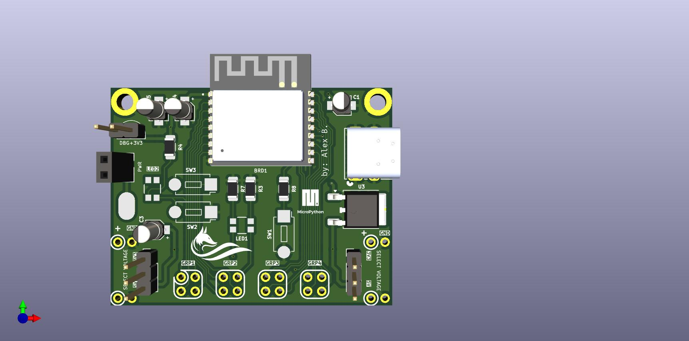

About¶

Has smaller footprint and uses less area on the breadboard. GPIOs pins are convenient to use.
- Features:
compact size requires very little space on a breadboard;
connects to the power rails on a breadboard;
can be powered by USB-C port or external power supply;
3.3V and 5V power supplies;
GPIOs arranged into 4 groups for easier identification;
on-board ESP32-C3 Module with USB-C port allows to flash a firmware as you work with breadboard;
debugging points;
power pads makes it easy to connect alligators supplying voltage to the board;
on-board system LEDs: power, and module reset mode;
on-board push switch for Reset and Flash modes;
on-board push switch and LED for your needs;
- ESP32-C3 Module:
single-core
32-bit RISC-V MCU @ 160 MHz
400 KB of internal RAM
RSA-3072-based secure boot and the AES-128/256-XTS flash encryption
low power-mode support
Rich connectivity for IoT applications: Wi-Fi and Bluetooth 5 (LE) with long-range support
Bluetooth LE SIG Mesh and Wi-FI Mesh support
22 GPIOs
See also
MicroPython Demo Code MicroPython demo code is available